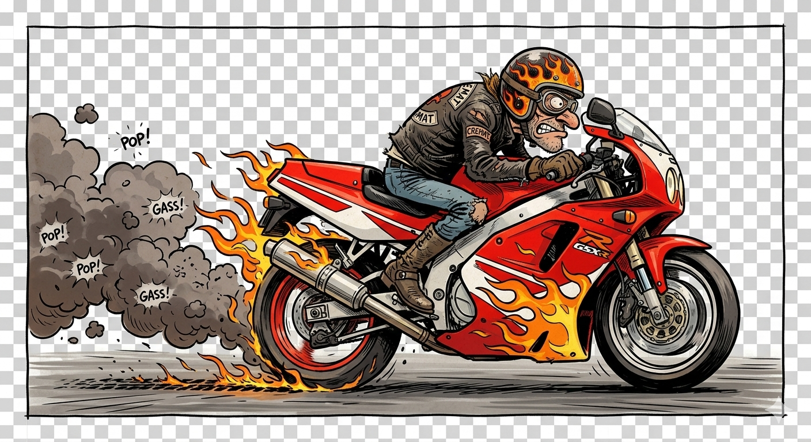
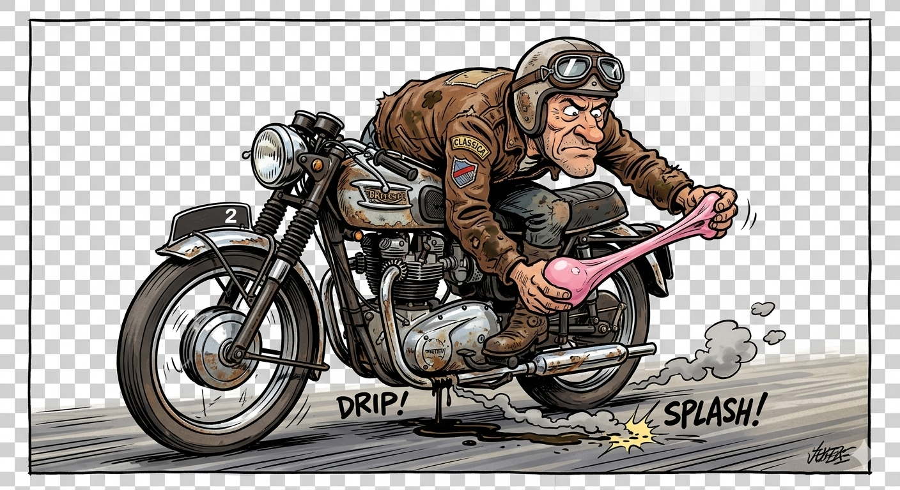
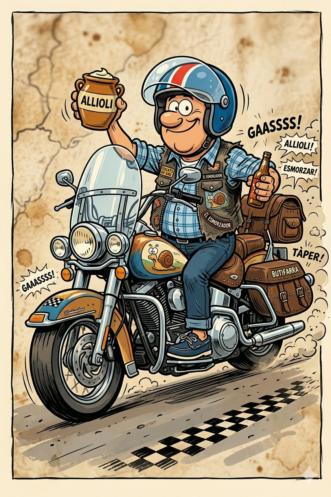

Benvinguts al cau dels Tocats de Gassss. No som professionals, no som influencers, només som una colla d'amics que creu que el so d'un tub d'escapament és millor que qualsevol simfonia de Beethoven.

Moto: Un coet amb rodes.
Habilitat: Desaparèixer i esperar al bar.

Moto: Una joia que perd oli.
Habilitat: Mecànica amb un xiclet.

Moto: Custom cromada.
Habilitat: Radar d'allioli.
Explora el cor de les Terres de l'Ebre, allà on el riu es troba amb el gassss.
Les 10 millors carreteres de Catalunya
Consells de seguretat
La Teca: ⭐⭐⭐⭐⭐
"La botifarra era més llarga que la recta de l'Aldea. Recomanat!" - L'Esmorzador
📍 Destí: Pantà de Riudecanyes
🕒 Trobada: 08:30h - Benzinera l'Aldea
20°C - Sol